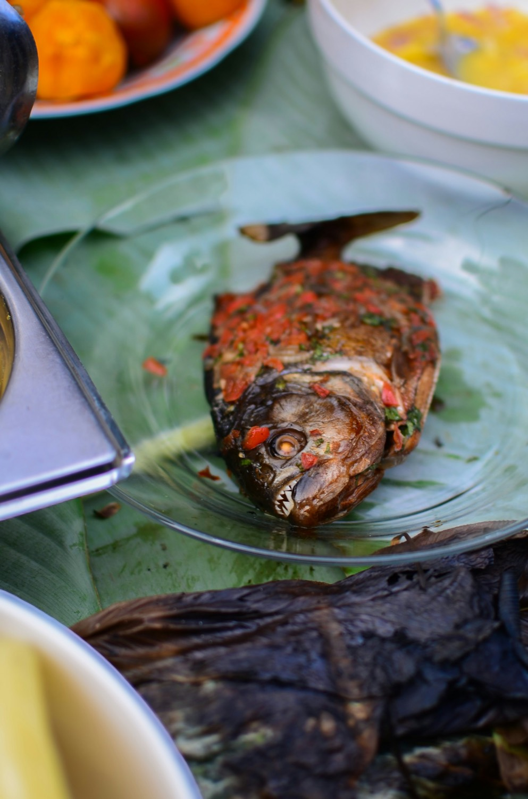

Sofradan kareler





Mevsimin taze ürünleri, ustalıkla
Menümüz mevsime ve tezgâha gelen ürüne göre değişir. Aşağıda sofralarımızın vazgeçilmezlerinden bir seçki bulacaksınız; güncel menü ve fiyatlar için dijital menümüze bakabilirsiniz.
Bu liste tasarım önizlemesi için örnektir; restoranın güncel menüsüyle değiştirilecektir.
